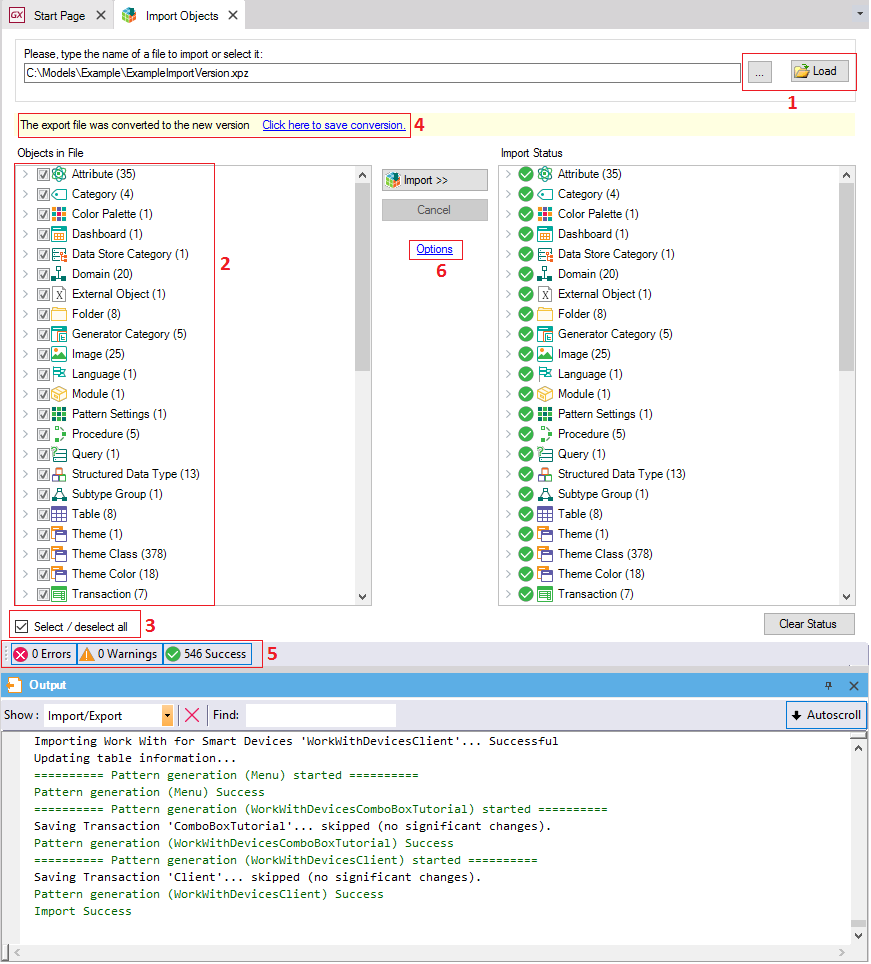

The import process in GeneXus is intended for knowledge-sharing among developers. You import what someone else (or yourself) exported. Changes made to your application by other team members, new developments that need to be included in your application, and existing "application blocks" (see GXopen) are only a few examples of Knowledge Manager Import uses. The Knowledge Manager Import dialog allows you to:
 The Import process updates the Output window with relevant process status, warnings and errors. Note that, while importing, Full Text Search indexing is paused (if not already). Once the import process ends, indexing resumes. NoteWhen the Automatic Backup option is set to Yes, a Frozen Version is created in the Knowledge Base with the backup remaining visible in the KnowledgeBase Versions tool window. |